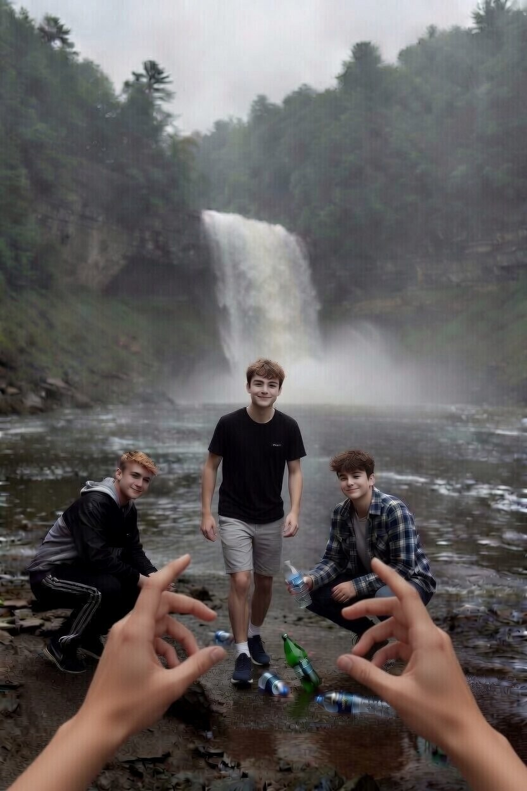
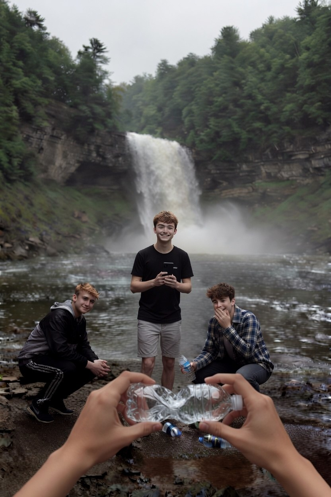

Подростки смеются: «Да ты выдумываешь! Щука с пробкой? Смешно». Один из них добавляет: «Фотошоп, наверное». Но третий, который всё это время молчал, задумчиво смотрит на уплывающие бутылки

«Не верите — пойдемте со мной. Я покажу вам место вниз по течению, где куча ваших же бутылок застряла в ветках. Сами увидите, сколько вы намусорили за лето»

«Давайте так: я достаю ваши бутылки, а вы за это рассказываете своим друзьям, что пластик в воде убивает рыбу. И выкладываете пост в соцсети с хештегом #не_мусорь»